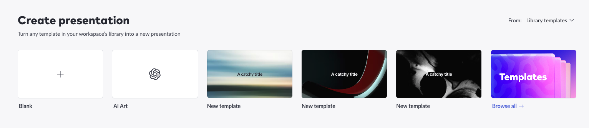
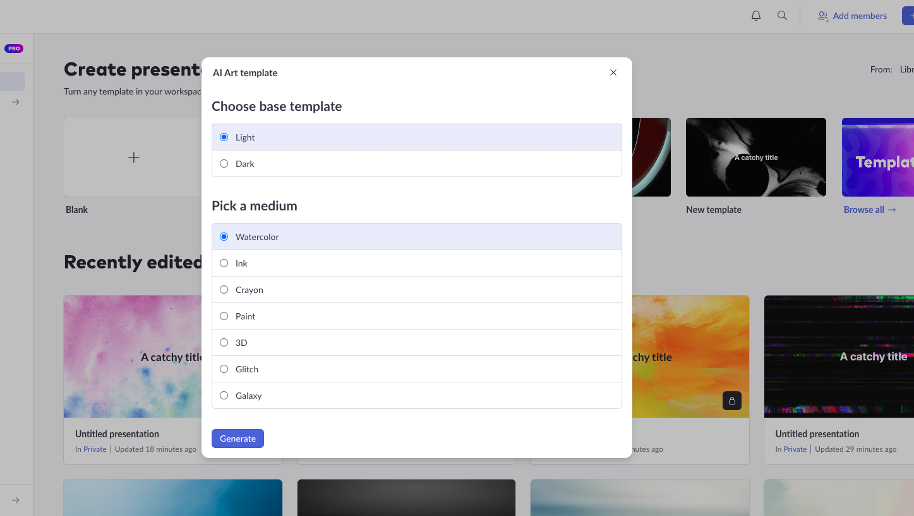
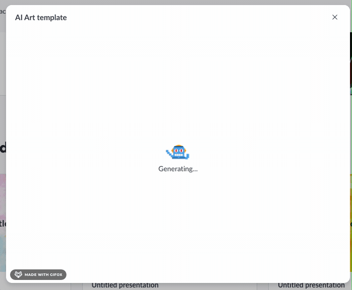
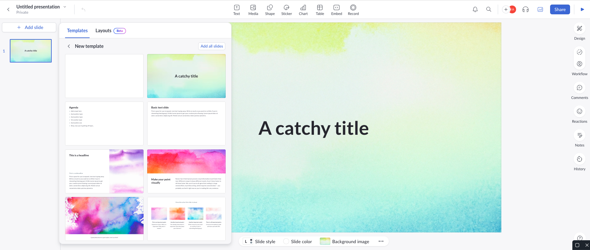

AI Art templates
For the hackathon in Febrary of 2023, we were challenged with integrating AI at Pitch. I picked
Dall-E
and
created a workflow for starting with a template of AI-generated abstract art. I added this button to
the
starting presentation options:

which opened a menu of limited parameters we would use to create the art-generating prompt:

and after a quick dancing robot loading screen..

you would be redirected to the editor to start your presentation with unique, beautiful abstract
artwork
in
slide template.
